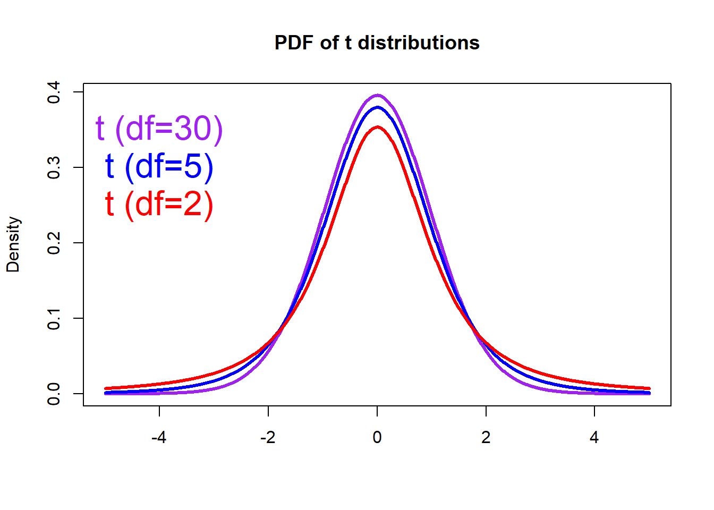
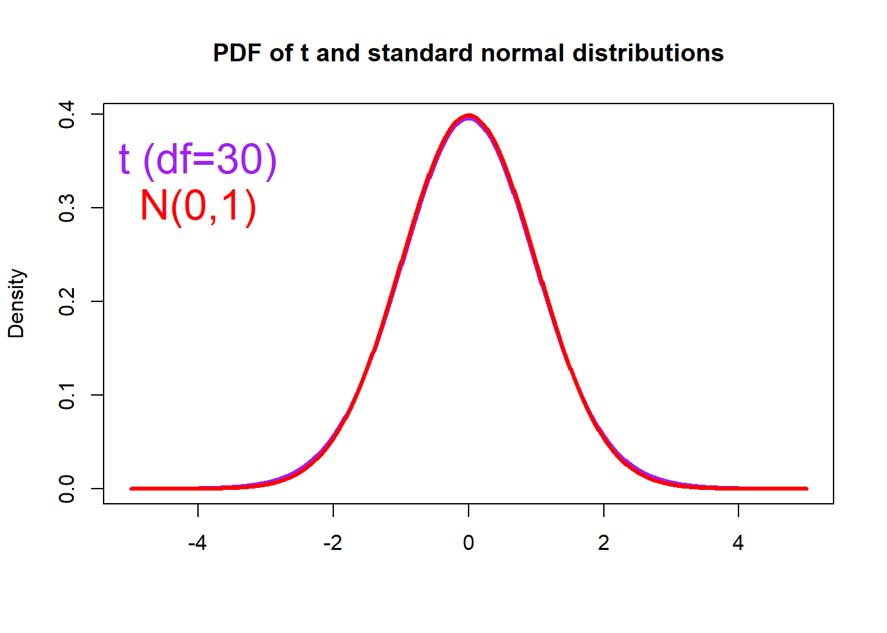

Section 06 One-sample Z-test and t-test
Section Example: Span calibration

Suppose we want to determine the concentration of CO (carbon monoxide) near freeways with various conditions of traffic flow. The basic technique involves capturing air samples in special bags, and then determine the CO concentrations in a bag using an instrument called spectrophotometer. The spectrophotometers are quite delicate and have to be calibrated every day. This is done by measuring CO concentration in a span gas, where the concentration is precisely controlled at 70 ppm. If the spectrophotometer reads close to 70 ppm on the span gas, it’s ready for use; otherwise, it has to be adjusted.
One day, we make five readings on span gas, and get:
78, 83, 68, 72, 88
So the error then is:
8, 13, -2, 2, 18
OK, 4 out of 5 of these numbers are higher than 0, and some of them by quite a bit. Can this be explained on the basis of chance variation? Or does it show bias?
Instrument error
Instrument error refers to the error of a measuring instrument, or the difference between the actual value and the value indicated by the instrument. There can be errors of various types, and the overall error is the sum of the individual errors. Here we focus on systematic errors and random errors.
The size of the systematic error is sometimes referred to as the accuracy. For example the instrument may always indicate a value 5% higher than the actual value. A systematic error may arise because the instrument has been incorrectly calibrated, or perhaps because a defect has arisen in the instrument since it was calibrated. Instruments should be calibrated against a standard instrument that is known to be accurate, and ideally the calibration should be repeated at intervals.
The range in amount of possible random errors is sometimes referred to as the precision. Random errors may arise because of the design of the instrument. In particular they may be subdivided between errors in the amount shown on the display, and how accurately the display can actually be read.
The Z-Ratio
We also know that the spectrophotometer can measure CO concentration with an instrument random error of 10 ppm (1 \(\sigma\)). Instrument error generally follows a normal distribution. In this case, let’s now assume that the error follows a normal distribution \(N(\mu , 10)\), where \(\mu\) is unknown. With this set-up, we can write:
H0: The spectrophotometer has no bias (\(\mu = 0\))
H1: The spectrophotometer has a positive bias (\(\mu > 0\))
To test the hypothesis (H0), let’s calculate the p-value assuming H0 is true. Here we will use Z-Ratio, which is defined as:
\[Z=\frac {Estimate - Parameter} {SD(Estimate)} \] In this case, \(Estimate\) is the sample average (\(\overline{X}\)), and \(Parameter\) is the population mean (\(\mu\)). Since the sample is from a normal population with a known (\(\sigma\)), the SD of the sample average (\(\overline{X}\)) is then \(\ {\sigma} / {\sqrt{n}}\), here \(n\) is the sample size.
For our job, it is then specified as:
\[Z=\frac {\overline{X} - \mu} {\sigma / \sqrt{n}} \]
Basically, Z-Ratio describes how far do the observations deviate from the assumed mean.
One sample Z-test
In this case, \(\overline X\) is 7.8, as the mean of 8, 13, -2, 2, 18, and \(\sigma\) is 10. Assuming H0 is true, we get \(Z\) is 1.74.
If the sampling distribution of the estimate is normal, then the sampling distribution of \(Z\) follows standard normal distribution by definition. Then with R, we can compute the p-value:
# Sample
Sample <- c(78, 83, 68, 72, 88)
# Baseline
Baseline <- 70
# Error
Error <- Sample - Baseline
# Spectrophotometer error SD
SD <- 10
# Get Z-ratio
Z <- mean(Error)/(SD/sqrt(length(Error)))
# Find the one-side p-value
# The pnorm function gives the Cumulative Distribution Function (CDF)
# of the Normal distribution in R, which is the probability that
# the variable takes a value lower or equal to a threshold (here Z).
# Here we use 1-pnorm to get the probability that the
# variable takes a value higher than the threshold (Z).
P_value <- 1 - pnorm(Z, mean=0, sd=1)
print(P_value)## [1] 0.04056795OK, we have a probability of about 4.06% getting a statistic (\(Z\)) as extreme or more extreme than the observed statistic (1.74), assuming H0 is true. This is a small probability, and is NOT likely due to chance. We can reject H0 based on the observations. Thus, the spectrophotometer has postive bias based on the observations.
Now change the spectrophotometer error to 20 and repeat the above steps. Can you explain what happens?
The t-Ratio
In the previous example, we assume the SD (\(\sigma\)) of instrument error is known. However, this is usually is not the case. Very often, the SD of an estimate is unknown. For example, the size of instrument error may vary from day to day, leading to a changing SD of instrument error. We need to replace Z-Ratio with t-Ratio in this situation.
The t-Ratio is defined as:
\[t=\frac {Estimate - Parameter} {SE(Estimate)}\] Here the Standard Error (SE) refers to the sample. If \(s\) is the sample SD, the SE for the average is
\[SE(\overline {X})=\frac {s} {\sqrt{n}}\] And we have:
\[t=\frac {\overline{X} - \mu} { {s} / {\sqrt{n}}} \] If \(\overline {X}\) is the average in a random sample of size \(n\) from a normal population, the sampling distribution of its t-Ratio follows a Student’s t-distribution on \(n-1\) degrees of freedom (df).
The mathematical form of the PDF of a Student’s t distribution is very complicated. With R, we can easily plot different PDFs with the dt() function.
# Make a vector from -5 to 5, with a step of 0.01
x <- seq(-5.0, 5.0, by=0.01)
# Compute the density for each element in x
# Set the degrees of freedom to be 30
density1 <- dt(x, df=30)
# Plot Density
plot(x, density1, col="purple", xlab="", ylab="Density",
type="l", lwd=3, cex=2,
xlim=c(-5.0, 5.0),
main="PDF of t distributions")
# Compute and plot the density from another t distribution
# Set the degrees of freedom to be 5
density2 <- dt(x, df=5)
lines(x, density2, col="blue", xlab="", ylab="Density",
type="l", lwd=3, cex=2)
# Compute and plot the density from another t distribution
density3 <- dt(x, df=2)
lines(x, density3, col="red", xlab="", ylab="Density",
type="l", lwd=3, cex=2)
# Add legends
text(-4, 0.35, "t (df=30)", col="purple", cex=2)
text(-4, 0.30, "t (df=5)", col="blue", cex=2)
text(-4, 0.25, "t (df=2)", col="red", cex=2)
As the sample size increases, the Student’s t distribution becomes more like a standard normal distribution (n > 30).
# Plot Density
plot(x, density1, col="purple", xlab="", ylab="Density",
type="l", lwd=3, cex=2,
xlim=c(-5.0, 5.0),
main="PDF of t and standard normal distributions")
# Compute and plot the density from the normal distribution
density4 <- dnorm(x, mean = 0, sd = 1)
lines(x, density4, col="red", xlab="", ylab="Density",
type="l", lwd=3, cex=2)
text(-4, 0.35, "t (df=30)", col="purple", cex=2)
text(-4, 0.30, "N(0,1)", col="red", cex=2)
One sample t-test
Let’s use the observations again, but conduct a one-sample t-test.
H0: The instrument has no bias (\(\mu = 0\))
H1: The instrument has a positive bias (\(\mu > 0\))
In this case, \(\overline X\) is again 7.8, \(SE(\overline X)\) is 3.16 ,assuming H0 is true, we get \(t\)=2.16.
Then with R, we can compute the p-value:
# Sample
Sample <- c(78, 83, 68, 72, 88)
# Baseline
Baseline <- 70
# Error
Error <- Sample - Baseline
# Get sample size and degrees of freedom
n <- length(Error)
df <- n - 1
# SE of the average
SE <- sd(Error)/sqrt(n)
# Get t-ratio
t <- mean(Error)/SE
# Find the one-side p-value
# The pt function gives the Cumulative Distribution Function (CDF)
# of the Student's t distribution in R, which is the probability that
# the variable takes a value lower or equal to a threshold (here t).
# Here we that 1-pt to get the probability that the
# variable takes a value higher than the threshold (t).
P_value <- 1 - pt(t, df=df)
print(P_value)## [1] 0.04844399Now, we have a probability of about 4.84% getting a statistic (\(t\)) as extreme or more extreme than the observed statistic (2.16), assuming H0 is true. This is a small probability, and is NOT likely due to chance. We can reject H0 based on the observations. Thus, the instrument is positively biased based on the observations.
One sample t-test with R
It turns out you can perform the previous one-sample t-test simply as:
H0: The instrument has no bias (\(\mu = 70\))
H1: The instrument has a positive bias (\(\mu > 70\))
In R, this is done by:
# Sample
Sample <- c(78, 83, 68, 72, 88)
# Call t.test function
# Here we compare the sample average with a known mean (70)
# Since H1 states a positive bias,
# we need to compute the one-side p-value
t.test(Sample, mu=70, alternative ="greater")##
## One Sample t-test
##
## data: Sample
## t = 2.16, df = 4, p-value = 0.04844
## alternative hypothesis: true mean is greater than 70
## 95 percent confidence interval:
## 70.1017 Inf
## sample estimates:
## mean of x
## 77.8In-class exercises
Exercise #1
To test an instrument is biased or not, we measure a standard sample (4.55 mg/kg) 5 times. And at each time, the observation is made independently. The readings are as follow:
4.28, 4.40, 4.42, 4.35, 4.37
1.1 Check the normality of the sample
1.2 Do you use a Z-test or a t-test?
1.3 What is the H0 and H1?
1.4 Do you use one-side or two-side p-value?
1.5 Is the instrument biased or not?
Exercise #2
A student thinks people consume more energy when temperature is higher. To test this hypothesis, the student collects monthly energy costs for families from the previous year when temperature is 0.7 degree lower than the current year, and gets the mean cost per month was 200 RMB. The student then randomly samples 20 families and records their energy costs for the current year as fellow:
199, 202, 202, 198, 196, 197, 201, 203, 198, 204,
201, 203, 201, 203, 203, 202, 197, 200, 201, 197
Do the data suppose the student’s hypothesis?